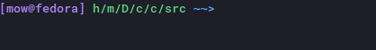
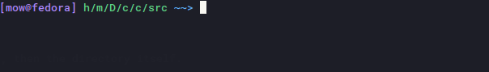
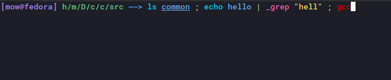

Features Overview¶
The features listed in our specification for the development of the shell consisted of adding more applications, unsafe application variants, piping, redirecting, command substitution as well as general refactoring.
This section will highlight the additional features added to the shell that were not requested but we thought would make a more effective shell.
Applications¶
These are additional commands that the original shell did not contain, allowing users to perform more tasks through their terminal.
mkdir¶
Creates directories at the specified paths.
mkdir [PATH]...
PATHrepresents the directory to be created.
rm¶
Deletes empty directories and files.
rmd [OPTIONS] [PATH]...
PATHrepresents the directory to be created.OPTIONS:-rRecursively deletes items within a directory, then the directory itself.
Extra Utility¶
Additions here are essentially quality of life changes, allowing users to make use of the shell in a more effective manner. All of these changes are easilly made possible by using PromptSession from prompt_toolkit library.
Key Bindings¶
Our shell fully supports Emacs keybindings by default.
Ctrl-p - up arrow
Ctrl-n - down arrow
Ctrl-a - go to beginning of the line
Ctrl-e - go to the end of the line
Ctrl-k - kill everything to the right of the cursor
and more…
Command Buffer¶

Just like any normal shell, our shell has a command buffer! You can navigate through the history of previosly ran commands using arrow keys
Text Completion¶

Pressing tab while typing a command in the Comp0010 Shell will automatically insert valid paths.
Syntax Highlighting¶

By combining features from lark and prompt_toolkit libraries we were able to come up with
contextual syntax highlighting for our shell.
It will only highlight the app, if our shell recognises it. In case our shell is not aware of the app, it will highlight it red.
Unsafe Apps are highlighted differently to normal apps.
If an argument to a command is an existing path, it will get underlined.
If it detects that the syntax of the currently typed command is incorrect the whole input will get highlighted red.
It also highlights quotations pipes and sequences.